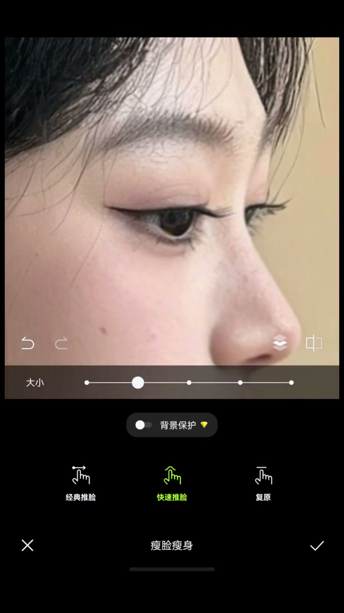
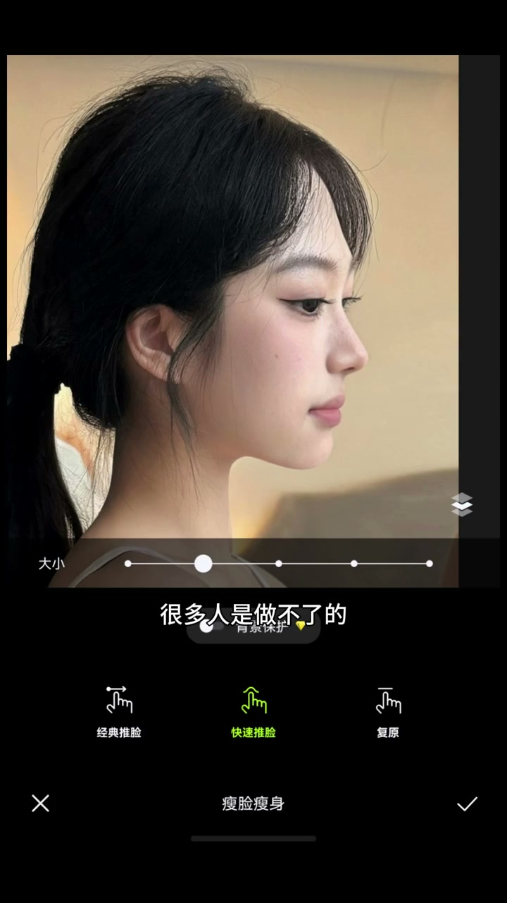

第一个坑：先垫鼻基底是错的
00:00想成为顶级美女，颌面必须非常优越、丝毫不差。
00:07第一个坑：很多人喜欢先把鼻基底垫起来，但垫完并不好看，因为中轴线这一条线立体了，其他位置跟不上。

[00:10] 只垫鼻基底：中轴立体但四周跟不上，显假
Filling only the nose base: the midline gains dimension but the surroundings lag — it looks fake
先做面中基底，位置是关键
00:23做鼻基底之前，先要把面中基底做得很优越。但面基底部位置要注意：常规打满这个区域，颧骨高的会连成一片，面中变长，眼下眼眶填得很满没呼吸感，眼眶被挤小反而没放大眼睛。
00:50真正好看的顶级美女，婴儿肥大概在这个位置——既缩短中庭、又有呼吸感，还能弱化颧骨。

[00:32] 面基底部别打满：连成一片会面中变长
Don't fill the whole nose base: a solid patch lengthens the mid-face

[00:50] 婴儿肥位置：缩短中庭、弱化颧骨、有呼吸感
Baby-fat placement: shortens the mid-face, softens cheekbones, adds breathing room
鼻基底的做法与细节
01:01有面中肌底的加持，才可以做鼻基底。如果你是长中庭，需要做凸面脸，显得脸立体、中庭短。
01:12鼻基底凹陷严重的小宝，应该会有上颌发育不足，判断不准会被误认为反颌。做鼻基底时一定要把上颌弓位置做起来。
01:26放假体一定是向下牵扯的力，不能向上，向上人会很奇怪。只做鼻基底，上唇和人中跟不上也不好看。

[01:24] 鼻基底：上颌弓做起来，假体向下牵扯不能向上
Nose base: the maxillary arch should build up — the implant pulls downward, never upward
眼眶骨做加法 + 下巴避坑
02:05顶级美女非常重要的条件：眼眶骨这一圈都要立体、都要在面部显现出来，不能做减法，这里做加法——眉骨、双C位置、山根、中庭都很重要。
02:35下巴：存在牙弓发育不足，下巴万万不能往前兜，要坐直。面中如果能立体到一定程度，下颌线不必担心。

[02:28] 眼眶骨一圈立体：眉骨、双C、山根做加法
A full orbit of dimension: brow bone, double-C, and nose bridge all add
小甜长相慎做 + 骨相思维
03:04最近小甜长相很火，但很多人做不了：比如额头发际线低、没什么表现点，靠额头包住整个下半张脸，其实并不高级，需要的量非常大，光额头就把很多人挡在门外。
03:41骨相做加法的思维更长久、更抗衰——比起盲目追求某种长相，把骨相基础打对才是长期收益。

[03:05] 小甜长相：额头包下半张脸其实不高级
Sweet-face look: a forehead wrapping the lower half of the face isn't actually refined
骨相改善讲顺序：面中基底先行、鼻基底跟上、眼眶做加法——骨相思路更长久更抗衰。